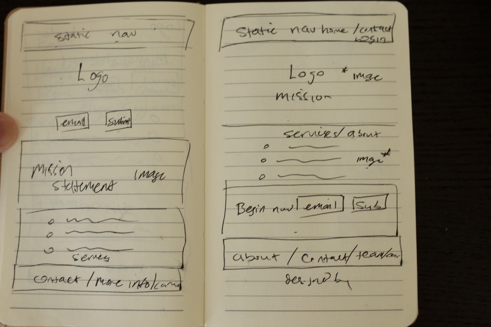
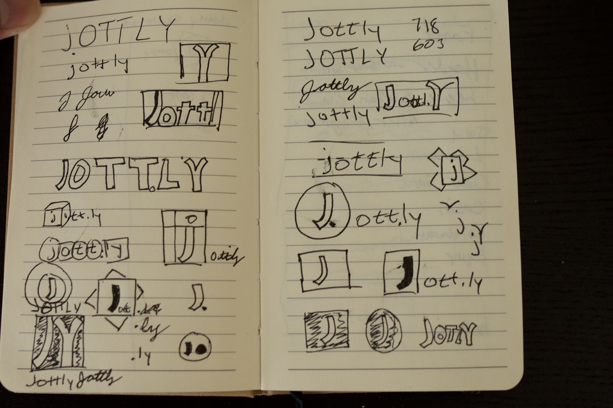

Jott.ly
Web Design // HTML // CSS // Javascript // jQuery // Illustrator // Photoshop
Jott.ly is a Bloc Apprenticeship project that tasked me with creating a landing page for a cloud-based collaborative platform software as a service (SaaS) that brings teams together working on various projects that require coordination and open lines of communication online. This required designing a brand identity and front-end web development.
Goals
1. Create a responsive landing page
2. Ensure that the “sign up” features are easy to find
3. Include patterns and branding that follow current industry standards
Research
I started my research by looking at other cloud-based collaboration tools out there such as Slack, inVision, Dropbox, and Trello. Since this project was about creating a landing page, I was able to identify similarities from all of the websites. For the user, they made it easy to sign up initially, displayed statements that made collaborating sound simple, used testimonials to solidify their influence on multiple industries, and had a way to sign up at the end of the page. Drawing inspiration from these patterns, I was able to start developing how the page would look and feel .
Inspiration
I started drafting some ideas for the brand identity that were inspired by other collaboration websites. By using root words that encouraged people to work together and sketching a logo the emphasized collaboration, this helped me start to visualize how the branding would look. Also, I chose a color palette with light colors that would be inviting to people. From my research, I wrote content that would encourage someone to use Jott.ly by highlighting it’s simplicity and providing industry testimonials. I decided on font choices that were easy on the eyes with a combination of sans-serifs. Then, finally put this all together by jumping into Illustrator to start wireframing the landing page, designing the logo, and incorporating my content choices.
